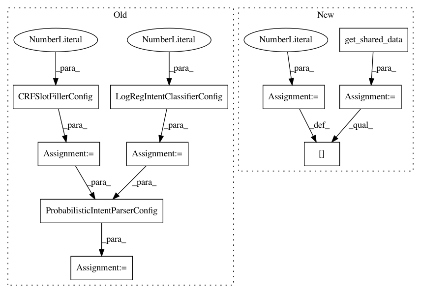

64166241561ef4e968f4c2befdcefcd1de376292,snips_nlu/tests/test_probabilistic_intent_parser.py,TestProbabilisticIntentParser,test_should_parse_with_filter,#TestProbabilisticIntentParser#,64
Before Change
utterances:
- foz for [slot3:entity3](baz))
dataset = Dataset.from_yaml_files("en", [dataset_stream]).json
classifier_config = LogRegIntentClassifierConfig(random_seed=42)
slot_filler_config = CRFSlotFillerConfig(random_seed=42)
parser_config = ProbabilisticIntentParserConfig(
classifier_config, slot_filler_config)
parser = ProbabilisticIntentParser(parser_config)
parser.fit(dataset)
text = "foo bar baz"
After Change
utterances:
- foz for [slot3:entity3](baz))
dataset = Dataset.from_yaml_files("en", [dataset_stream]).json
shared = self.get_shared_data(dataset)
shared[RANDOM_STATE] = 42
parser = ProbabilisticIntentParser(**shared)
parser.fit(dataset)
text = "foo bar baz"
In pattern: SUPERPATTERN
Frequency: 3
Non-data size: 10
Instances
Project Name: snipsco/snips-nlu
Commit Name: 64166241561ef4e968f4c2befdcefcd1de376292
Time: 2019-05-20
Author: clement.doumouro@gmail.com
File Name: snips_nlu/tests/test_probabilistic_intent_parser.py
Class Name: TestProbabilisticIntentParser
Method Name: test_should_parse_with_filter
Project Name: snipsco/snips-nlu
Commit Name: 64166241561ef4e968f4c2befdcefcd1de376292
Time: 2019-05-20
Author: clement.doumouro@gmail.com
File Name: snips_nlu/tests/test_probabilistic_intent_parser.py
Class Name: TestProbabilisticIntentParser
Method Name: test_should_parse_top_intents
Project Name: snipsco/snips-nlu
Commit Name: 64166241561ef4e968f4c2befdcefcd1de376292
Time: 2019-05-20
Author: clement.doumouro@gmail.com
File Name: snips_nlu/tests/test_probabilistic_intent_parser.py
Class Name: TestProbabilisticIntentParser
Method Name: test_should_parse